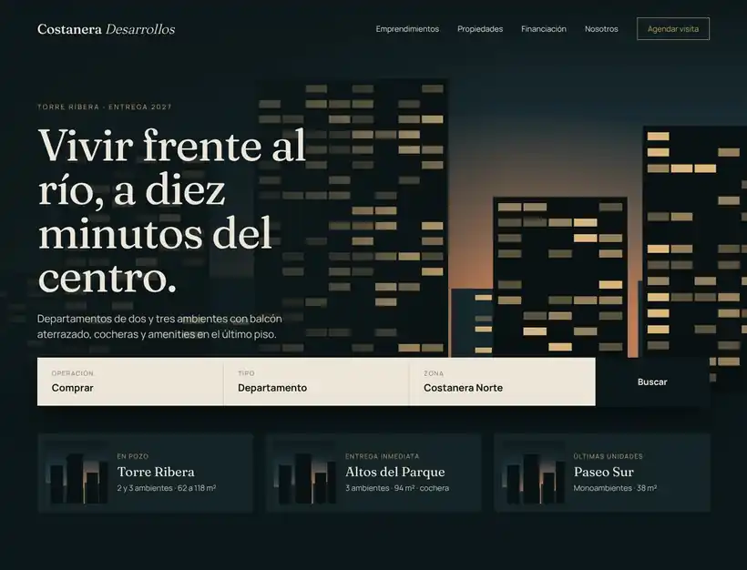
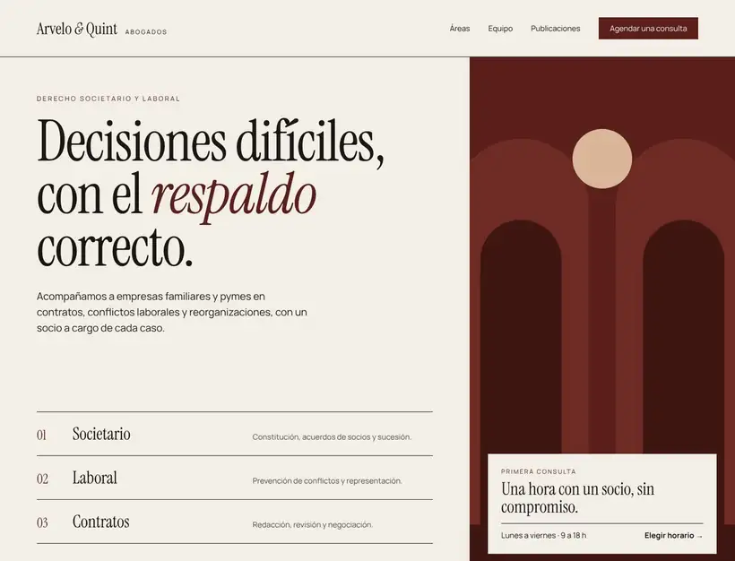
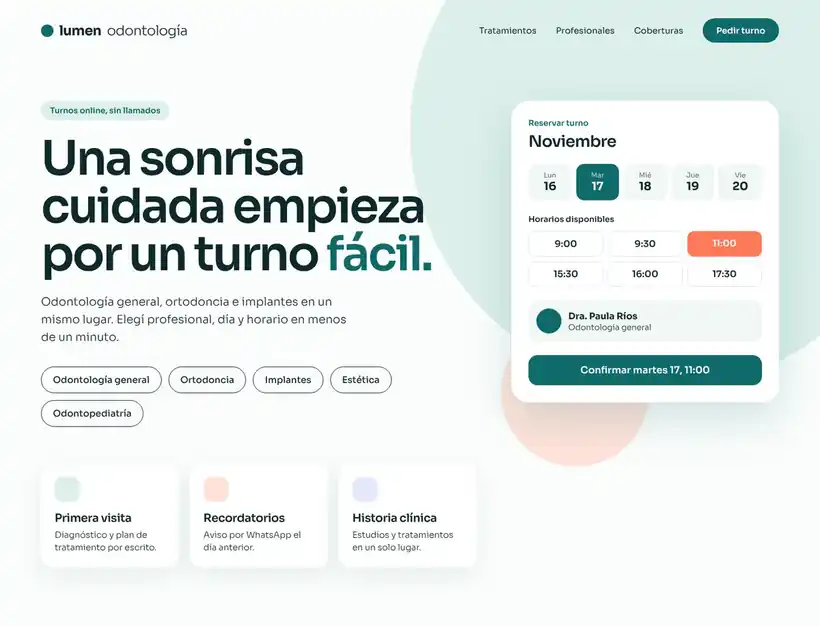
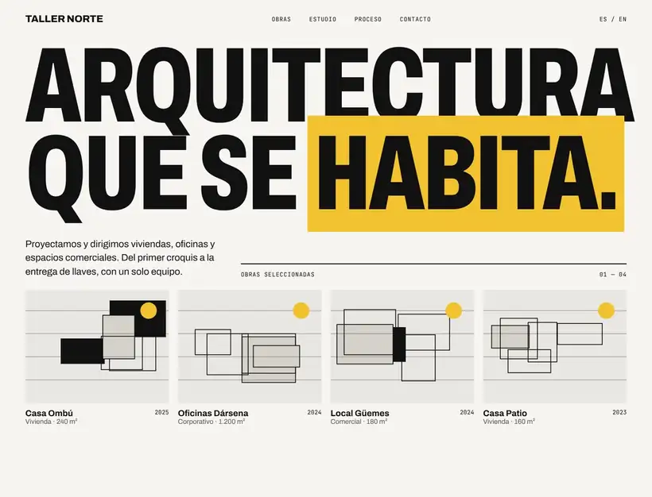

Web que capta consultas.
Sitios y landings pensados para que cada visita tenga un camino claro al contacto, con medición desde el primer día.
Next.jsWordPressTiendanubeSEO técnicoAnalítica
Web, sistemas, automatización e inteligencia artificial
Relevamos cómo trabaja tu empresa, diseñamos la herramienta que le falta y la entregamos por etapas cortas. Sin plantillas, sin intermediarios y con el precio cerrado antes de empezar.
Tomamos proyectos nuevos este mes. La primera conversación no se cobra.
Turnos anotados en tres lugares, datos cargados dos veces y una sola persona que sabe dónde está todo. Ese desorden es el que pasamos a un sistema.
Cuatro especialidades que se combinan según el caso: presencia digital, software a medida, automatización e inteligencia artificial. Un solo interlocutor para todas.
Sitios y landings pensados para que cada visita tenga un camino claro al contacto, con medición desde el primer día.
Gestión, turnos, pedidos y paneles a medida de cómo ya trabaja cada empresa.
Conectamos las herramientas que ya se usan para que la información pase sola de una a otra.
Asistentes que responden en segundos, reúnen los datos y derivan a una persona cuando hace falta.
Cada servicio parte de un problema concreto. Si no sabés cuál es el tuyo, lo vemos juntos en la primera conversación.
Un sitio rápido, claro y pensado para que quien entra termine escribiéndote. Cada página tiene un objetivo y un camino corto al contacto.
Sitio institucional, landing de campaña, catálogo, tienda online, formularios conectados a WhatsApp o a tu CRM, SEO técnico y medición de visitas.
Comercios, profesionales y empresas de servicios que quieren que su web trabaje como un vendedor más.
Consultar por este servicioUn sistema único donde cada dato se carga una sola vez y queda disponible para quien lo necesita. Hecho para tu forma de trabajar, no al revés.
Gestión de clientes y ventas, turnos y reservas, pedidos y stock, paneles administrativos, portales para clientes y reportes.
Empresas con procesos propios que el software enlatado no cubre o cubre a medias.
Consultar por este servicioTe acompañamos de la idea a un producto que se puede usar y cobrar, con una base técnica preparada para crecer.
Definición de alcance, diseño de interfaz, desarrollo, cuentas y permisos, suscripciones y cobros, panel de administración.
Emprendedores y empresas que quieren lanzar un producto digital propio.
Consultar por este servicioConectamos las herramientas que ya usás para que la información pase sola y las tareas repetidas dejen de depender de una persona.
Integración entre sistemas, carga automática de consultas, seguimiento comercial, avisos y recordatorios, reportes programados.
Equipos administrativos y comerciales que repiten las mismas tareas todas las semanas.
Consultar por este servicioEmpezamos por un proceso concreto, medimos el antes y el después, y recién ahí ampliamos. IA donde ahorra trabajo, no donde queda linda.
Asistentes que responden consultas por WhatsApp o en tu web, clasificación y resumen de documentos, agentes que ejecutan tareas, búsqueda sobre tu propia información.
Relevamos cómo trabajás hoy, ordenamos el proceso y lo pasamos a herramientas digitales que tu equipo pueda usar desde el primer día.
Diagnóstico, rediseño del proceso, migración de datos, capacitación y mejora de sistemas que ya tenés.
Desarrollamos esa herramienta puntual que te resuelve un problema diario, sin encarar un sistema completo.
Cotizadores y presupuestadores online, calculadoras, tableros de indicadores, generadores de documentos, formularios inteligentes.
Profesionales independientes y áreas de una empresa que necesitan una herramienta propia.
Consultar por este servicioUn presupuesto sin diagnóstico es una adivinanza. Por eso el proceso tiene cinco pasos y en cada uno sabés qué se hace, cuánto cuesta y cuándo se entrega.
Nos contás qué necesitás por WhatsApp o en una videollamada. Sin costo y sin compromiso.
Relevamos cómo trabaja hoy tu negocio y dónde se pierde tiempo o ventas.
Alcance, plazo y precio definidos para cada etapa, por escrito.
Construimos con entregas parciales para que veas el avance y puedas corregir a tiempo.
Publicamos, capacitamos a tu equipo y seguimos disponibles para mejoras y mantenimiento.
Somos un estudio nuevo y todavía no publicamos trabajos de clientes. Lo que ves acá son ejercicios de diseño con marcas ficticias y demos propias que podés probar.




Son ejercicios de diseño con marcas y contenidos inventados, hechos para mostrar el nivel de terminación. En un proyecto real las ilustraciones se reemplazan por fotografía del cliente.
Sitio de una clínica ficticia que toma turnos y los pasa al sistema.
En construcciónAgenda por profesional, ficha de cliente, tablero del día y recordatorios.
Abrir la demoResponde, califica la consulta y agenda el turno en el sistema.
En construcciónLincoln Code nace en Lincoln, provincia de Buenos Aires. Lo dirige Fernando Álvarez, que trabaja hace años en desarrollo web, automatización e inteligencia artificial aplicada a negocios, y suma colaboradores según lo que cada proyecto necesita.
Trabajamos con empresas, profesionales y emprendimientos de la ciudad, la región y el resto del país. El desarrollo es remoto y las reuniones van por videollamada, o en persona cuando la distancia lo permite.
Creemos que el software a medida no tiene que ser un lujo de empresas grandes. Un comercio, un consultorio o un estudio profesional también pueden tener tecnología hecha para su forma de trabajar.
La tecnología se elige después de entender el problema. A veces la respuesta es un sistema; a veces, una planilla mejor armada.
Preferimos entregar algo útil pronto y mejorarlo, antes que prometer todo para dentro de seis meses.
La usamos donde ahorra trabajo medible. Si no suma, lo decimos.
Hablás con quien diseña y desarrolla tu proyecto, sin intermediarios.
No. Estamos en Lincoln, pero trabajamos en remoto con clientes de toda la provincia y del resto del país.
Por etapas. Después del diagnóstico recibís una propuesta escrita con el alcance, el plazo y el precio de cada una.
Depende del alcance. Una página web lleva menos que un sistema de gestión, y por eso el plazo se define en la propuesta de cada etapa.
Ofrecemos mantenimiento y soporte mensual para que el sitio o el sistema sigan funcionando y mejorando.
Sí. Revisamos lo que tenés y te decimos si conviene mejorarlo, integrarlo con otras herramientas o rehacerlo.
La primera conversación es sin costo. Escribinos por WhatsApp o completá los datos y el mensaje se arma solo.
WhatsApp+54 9 2355 50-4890Lincoln, provincia de Buenos Aires, Argentina.
Atención en remoto a todo el país.